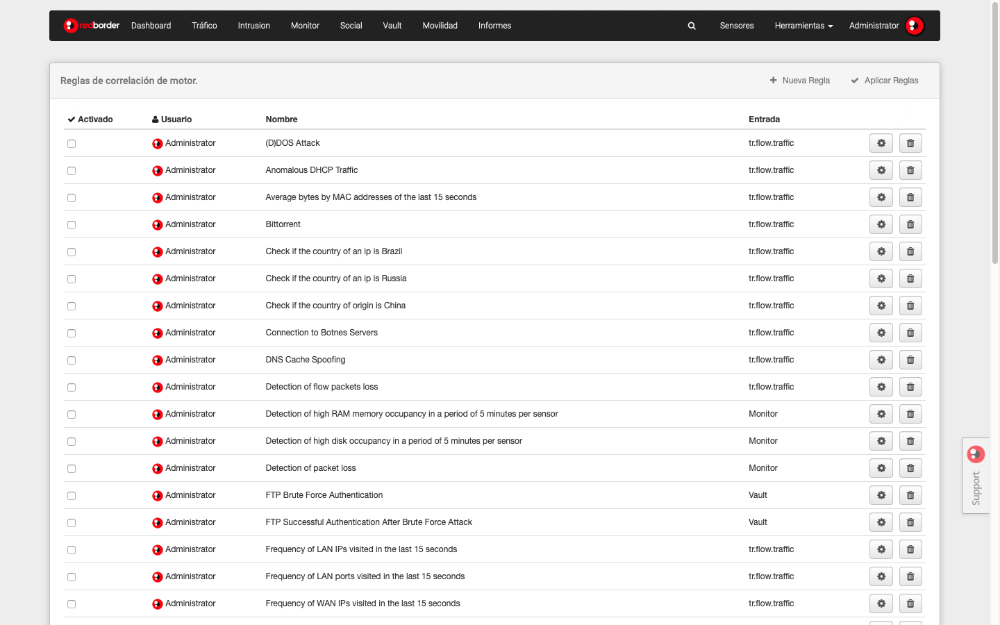

Anterior
Guía de Usuario
Siguiente
7.5. Reglas del motor de correlación
Aquí el uso puede ver todas las reglas para el motor de correlación. Es posible editar las reglas existentes y también crear otras nuevas.

Reglas del motor de correlación
Anterior
7.4. Configuración General
Subir
Inicio
Siguiente
7.6. Categorías de Monitor